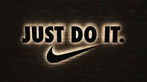

Andrew Nolan's Blog
Andrew's Blog


It all starts with a big bang...
Steve Krug proposes that a user's opinion of a website, like the universe, happens in a few seconds with a big bang.
Instead of particles clashing and expanding, it is a homepage that expands down a hierarchy of subpages. The root and arguably most important place of your app is the homepage. Within a few seconds of seeing the homepage a user's opinion of the site is formed.
The home page will be seen by everyone and it's important to get them started off on the right foot, most of a user's opinions about a page will be made quickly in the first few seconds. We will never meet everyone's needs, but luckily there are several ideas you can add to your homepage to make sure it is doing as much as possible.
Features such as:
If you have a well designed site it can establish credibility and trust with your user. It's good to have users confident in your web development abilities.
The main theme of these homepage topics are to show me what I'm looking for and show what I'm not looking for (but might not realize I wanted).
Another important feature of the homepage is establishing the site's identity and mission. Remember the trunk test from Chapter 6? We want users to know where they are. Don't let this be the first casualty when simplifying a page.
One good way to accomplish the goal of getting your purpose across is a tagline. Every site should have a tagline. Something people will remember and will explain what they are looking at. Like the Nike motto (also a reminder to follow these best practices)!
In the end, there are a lot of options for a homepage. No matter what you do, it is an important document that many users will use to form their first impressions of your site. If you want to determine if your homepage is strong enough, make sure it answers these four questions.
If your homepage can answer all that it will start users off on their journey on the right foot and improve their experience.
Enjoyed this article? Subscribe to the RSS Feed!